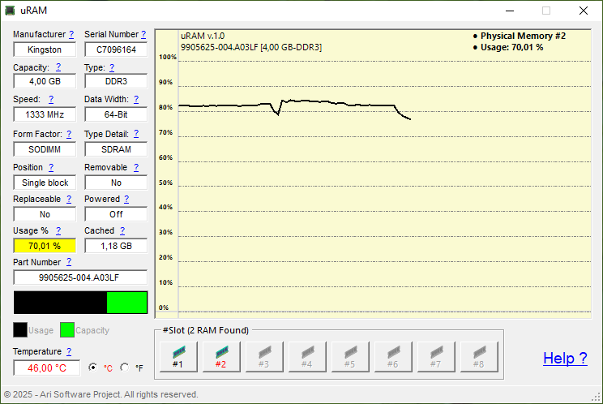

Innovative Software for Every Need.

Phone/WhatsApp: +62 813 5356 1716
Innovative Software for Every Need. |
|
Email: users.ariproject@gmail.com Phone/WhatsApp: +62 813 5356 1716 |
uRAM |
Real-Time Insights, Peak Performance. |
 |
| uRAM | 1.0 | 1.4 MB | Download | 5.0 |
uRAM is a powerful tool developed to monitor and provide detailed information about your computer's memory (RAM) in real-time. Designed with an intuitive interface and dynamic graphing capabilities, uRAM helps users gain a deep understanding of their system's memory performance and condition. Key Features of uRAM
Why Choose uRAM? Whether you're troubleshooting performance issues or exploring your system's hardware details, uRAM delivers comprehensive memory insights to empower users with critical data. It’s an indispensable tool for anyone who wants to monitor their computer's memory and maintain a high level of system awareness. |
Copyright (C) 2025 Ari Sohandri Putra. Read License Terms